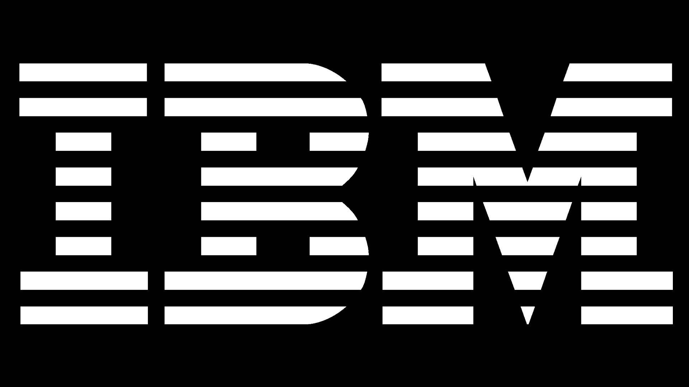

Présentation
Après avoir obtenu un baccalauréat scientifique spécialité en mathématiques, je me suis naturellement tournée vers une licence informatique. J’ai donc choisi l’université de Science technologie de Bordeaux pour suivre ce parcours, qui m’a ensuite menée vers un premier Master en Informatique fondamentale.
Durant cette première spécialité, j'ai pris conscience qu’un cursus théorique ne m'était pas adapté, et que la pratique me conviendrait davantage. C’est pour cela que j’ai décidé de me tourner vers une formation en alternance. C’est sous les conseils d'un membre de ma famille que je me suis tournée vers l’ESD, en Master Data Marketing. De fil en aiguille, il m’a mis en contact avec les ressources humaines de son entreprise et trois entretiens plus tard, j'étais acceptée au sein de l’équipe.
Cela fait désormais deux ans que je suis en alternance chez Piano Analytics, où j'ai approfondi mon expertise dans la solution Piano Analytics, un outil de collecte, de mesure et de visualisation de données web et mobiles.
Au quotidien, mon métier est de fournir un accompagnement personnalisé de la solution à nos clients, de l’implémentation jusqu'à la compréhension de l’outil, mais également la résolution de problème pouvant subvenir durant leur expérience. Depuis quelques mois maintenant, j’ai été affectée à une nouvelle solution sur laquelle je suis toujours formée, dans le but d’être polyvalente, et d'être capable de répondre à des problématiques plus importantes.
Même si ce livre blanc peut ne pas avoir l’air cohérent avec la fin de mon parcours, celui-ci a finalement tout à fait sa place. En effet, depuis six ans, la programmation fait partie intégrante de mon quotidien, et ma sensibilité pour l’écologie m’a conduite à explorer la complétion de ces deux domaines. Ce livre blanc a donc pour but de sensibiliser à l’impact du numérique sur l’environnement, mais aussi à la prise en main des outils et des actions nécessaires, pour une mise en place d’un développement logiciel durable et écoresponsable.
Introduction
Dans un monde de plus en plus numérique, la question de la durabilité environnementale est devenue incontournable. Chaque clic, chaque recherche, chaque vidéo regardée contribue à une empreinte écologique croissante.
En effet, l'industrie du numérique représente une part significative de la consommation énergétique mondiale. Avec des data centers, des infrastructures de réseau et des dispositifs personnels qui fonctionnent 24 heures sur 24, cela représente 4% des émissions de gaz à effet de serre.
C'est dans ce contexte que l'éco-code, ou le développement durable de logiciels, émerge comme une solution innovante et nécessaire. Ce qui se cache derrière l’appellation “d’éco-code”, c’est du code qui demandera moins de ressources serveurs pour effectuer la même tâche, un code plus optimisé tout simplement.
Avant tout, petit point histoire :
L'histoire de l'éco-code remonte aux premières prises de conscience environnementales des années 1970 et 1980, lorsque les impacts de l'industrialisation sur la planète ont commencé à être largement reconnus. Cependant, c'est avec l'explosion de l'ère numérique dans les années 1990 et 2000 que la nécessité d'une approche plus durable dans le développement des technologies est devenue évidente.
Au début, les efforts étaient principalement centrés sur la réduction de la consommation d'énergie des matériels informatiques, comme les ordinateurs et les serveurs. Les initiatives telles que l'Energy Star, lancée par l'Agence de protection de l'environnement des États-Unis en 1992, visaient à encourager la production de matériel informatique plus économe en énergie. Cependant, avec l'augmentation exponentielle des données traitées et des services en ligne, il est devenu clair que le logiciel lui-même jouait un rôle crucial dans la consommation des ressources.
L'émergence de l'éco-code en tant que discipline distincte s'est accélérée au cours de la dernière décennie, alimentée par plusieurs facteurs convergents. D'une part, la montée en puissance des data centers et des services cloud a mis en lumière les coûts énergétiques associés au traitement et au stockage des données. D'autre part, les utilisateurs et les entreprises ont commencé à exiger des solutions plus durables, non seulement pour des raisons économiques, mais aussi pour répondre à une demande croissante de responsabilité environnementale.
Quelques points de repère chronologiques :
Les pionniers de l'éco-code étaient souvent des organisations innovantes et des chercheurs en informatique qui ont exploré des moyens de rendre les algorithmes plus efficaces, de minimiser la consommation de ressources et d'optimiser la gestion de l'énergie.
Pour y arriver, c’est toute une architecture qui doit être réfléchie : comment réduire ses requêtes aux bases de données ? Quelle est la méthode la moins gourmande pour réaliser un calcul ? Qu’est-ce qui peut être mis en cache pour être servi à plusieurs utilisateurs sans nouveaux calculs ?
Adopter l'éco-code présente des avantages tangibles pour les entreprises. En réduisant la consommation énergétique des logiciels, les entreprises peuvent diminuer leurs coûts opérationnels et améliorer l'efficacité de leurs systèmes informatiques.
De plus, une approche de développement durable peut renforcer la réputation d'une entreprise en montrant son engagement envers la protection de l'environnement, ce qui est de plus en plus apprécié par les consommateurs et les parties prenantes.
Avant de mettre les pieds dans le plat, essayons de comprendre plus en détail l’impact que peut avoir le numérique sur notre environnement.
1. Comprendre l'impact environnemental du numérique
1.1 L'empreinte écologique du numérique
Lorsqu’on parle d'impact environnemental, ou encore de pollution numérique, on désigne les effets produits par les nouvelles technologies de l'information et de la communication (NTICS). Pour le définir, il faut prendre en compte toutes les étapes, en passant par consommation d'énergie, l'extraction de minerai ou encore le coût du transport jusqu'arriver à la phase de recyclage d'un produit numérique.
Quel est l'impact de la pollution numérique ?
Le numérique représente 4% des émissions de gaz à effet de serre dans le monde. Cet impact environnemental tente de prendre en compte la consommation d'énergie, l'extraction de minerais, le coût du transport, etc, jusqu'à la phase de recyclage d'un produit numérique.
Qu'est-ce qui pollue dans le numérique ?
La pollution numérique est causée par 3 sources principales : les utilisateurs avec leurs différents équipements informatiques, les centres de données ou data center et, enfin, les services et applications numériques.
Qu'est-ce qui pollue le plus dans le numérique ?
Le numérique pollue dans son ensemble mais la consommation mondiale de streaming vidéo émet 300 millions de tonnes de CO₂ dans le monde chaque année, ce qui constitue un chiffre important.
Nous allons donc voir les trois sources principales de pollution d’une industrie dont la consommation énergétique explose.
Smartphones et ordinateurs
Les smartphones, ordinateurs et autres terminaux numériques passent par une chaîne de fabrication dépendante des énergies fossiles : l’extraction minière de composants (dont les plus connus sont les métaux rares), l’assemblage du produit fini à des milliers de kilomètres et leur transport vers le lieu de vente.
Comme tout produit industriel, un appareil a besoin de beaucoup de matières pour sa conception.
- 600 kg de matières premières sont mobilisés pour un ordinateur portable de 2 kg. 500 kg pour une box Internet. Sa fabrication émet 103 kg de CO₂, sur les 156 kg émis sur l’ensemble de son cycle de vie.
- 70 matériaux différents, dont 50 métaux (notamment des métaux rares) sont nécessaires pour fabriquer un smartphone. Une tendance qui s'accentue puisque les téléphones portables ne contenaient qu'une vingtaine de métaux il y a à peine dix ans…
D’autres problèmes se posent quant à l’utilisation et l’extraction des matières premières : ces ressources ne sont pas illimitées et des conditions de travail des mines, d’où sont extraits les métaux rares, laissent à désirer.
Résultat : les équipements représentent à eux seuls 47% des émissions de gaz à effet de serre du secteur. Plus que leur utilisation par les consommateurs. Voilà un des paradoxes du numérique, une industrie qui dématérialise en masse, mais qui a besoin d’énormément de matière.
Recyclage et fin de vie
Cette empreinte est accentuée par le rythme soutenu de renouvellement des appareils. Au mieux, les déchets numériques sont dirigés vers des filières de recyclage, sinon éliminés ou enfouis après valorisation énergétique .
• 88% des Français remplacent leur téléphone portable alors qu’il fonctionne encore.
• Environ 50% des déchets électriques et électroniques sont collectés par les éco-organismes auprès des ménages, avec un taux de recyclage de 80%.
Internet
Nous nous connectons aujourd’hui à internet grâce à des câbles sous-marins, enfouis au fond de tous les océans et mers du globe.
On recense début 2020 406 câbles sous-marins fonctionnels, le plus court faisant 131 kilomètres, le plus long près de 20 000 kilomètres, en partant de Malaisie pour arriver en Californie.
Les infrastructures réseau représentent donc 28% des émissions de gaz à effet de serre émis par notre consommation du numérique, en passant de l’utilisation d’équipement lourds pour installer de tels câbles, aux bateaux qui servent à les transporter.
Data Centers
On recense début 2020 près de 4 500 Data Centers répartis dans 122 pays.
La Chine est à l’origine de 2,35% de la consommation totale d’électricité du pays électricité produite majoritairement à partir de charbon. À l'heure actuelle, les centres de données chinois utilisent un mix énergétique composé à 73% de charbon, à 23% d'énergies renouvelables et à 4% d'énergie nucléaire.
C’est au début 2018 que l’on se rend compte que 50% de l’approvisionnement en électricité d'AWS repose sur les énergies fossiles pour 17% s'appuyant sur des énergies renouvelables.
Autres impacts que peut avoir le numérique :
L’impact du numérique sur l'environnement ne s'arrête pas aux émissions de gaz à effet de serre. En effet, le numérique participe activement à la pollution et à la destruction des écosystèmes.
Des rivières détruites par l’exploitation de mines au Brésil. Des décharges à ciel ouvert remplies d’appareils numériques usagés au Congo. Ou encore des « villes-cancer » en Chine, où l’extraction des terres rares, indispensables aux outils numériques, cause des centaines de milliers de cancers.
1.2 Le lien entre l'impact numérique et l'éco-code
Le choix des méthodes de codage ainsi que le langage utilisé impacte directement la consommation énergétique des applications. Un code inefficace, ou un algorithme mal optimisé nécessite une plus grande puissance de calcul et des cycles de traitement plus long. En intégrant l'éco-code dans le développement d’un logiciel, les entreprises peuvent ainsi jouer un rôle clé dans la réduction de l'empreinte écologique du numérique.
Les Avantages que peut avoir l'éco-Code :
• Une réduction de la consommation énergétique : Un code optimisé nécessite moins de ressources matérielles et de cycles de traitement, et donc une baisse de consommation de l’énergie. Cela se traduit par une consommation d'énergie réduite. Celui-ci peut entraîner une réduction de la consommation énergétique de 30% à 40%.
• Une prolongation de la durée de vie du matériel : En réduisant l'usure des équipements, l’éco-code du code peut prolonger la durée de vie des serveurs et autres matériels informatiques, réduisant ainsi les déchets électroniques. Il a été estimé que l'optimisation peut augmenter la durée de vie des serveurs de 2 à 3 ans.
• Une efficacité opérationnelle : Des applications plus efficaces peuvent améliorer les performances globales et donc réduire les coûts de maintenance et de gestion des infrastructures, mais aussi un gain de temps conséquent.
2. Techniques et Méthodologie
2.1 Les Principes de base et les bonnes pratiques de développement
L'éco-code repose sur plusieurs principes fondamentaux visant à réduire l'empreinte énergétique des logiciels. Écrire du code qui utilise les ressources de manière optimale passe par plusieurs étapes permettant de minimiser les cycles de traitement et l'utilisation de mémoire, ce qui a pour but de réduit la consommation énergétique. Voici les étapes clés de cette mise en place :
Optimisation du code
Écrire un code propre et efficace qui exécute des tâches avec le moins de ressources possibles. Différentes alternatives d’optimisation du code co-existent :
• Réduire les requêtes réseau : en minimisant les appels au serveur et en utilisant des formats de données compacts, les applications consomment moins de bande passante et d’énergie lors des communications en ligne.
• Optimiser les boucles et les algorithmes : essayer de concevoir des boucles et des algorithmes plus efficaces pour accomplir des tâches, réduisant ainsi le temps de traitement et la charge sur le matériel. Regroupez les codes fréquemment utilisés, tout en séparant les codes peu utilisés.
• Gérer la mémoire efficacement : en évitant les fuites de mémoire et en libérant les ressources inutilisées, les développeurs réduisent la consommation de RAM et d’énergie. Pour réduire au minimum la mémoire réservée, regroupez les codes réservés dans des modules de chargement distincts. Assurez-vous qu'il est nécessaire d'utiliser le code réservé. Certaines structures système (telles que les pools mbuf) sont réservées en mémoire ; ne les augmentez pas de façon arbitraire.
Gestion éco-efficace des données
Utiliser les bases de données et les structures de données de manière efficace pour réduire les besoins en stockage et en traitement. Cela peut inclure des techniques comme la compression de données, l’utilisation de formats de données efficaces et l’indexation appropriée.
Utilisation rationnelle des ressources serveur
Optimiser l’utilisation des serveurs, notamment en termes de gestion de la charge et de l’équilibrage, pour réduire la consommation d’énergie. L’adoption de l’infrastructure en tant que service peut également contribuer à une utilisation plus efficace des ressources.
Développement basé sur le cloud
Bien que les fournisseurs de cloud offrent souvent des infrastructures conçues pour minimiser la consommation d’énergie, l’avantage écologique de ces services n’est pas universel et dépend de plusieurs facteurs. L’infrastructure existante de l’entreprise et les besoins spécifiques du projet jouent un rôle crucial dans cette évaluation. Dans certains cas, des solutions alternatives, telles que des mini bases de données locales sur un appareil mobile ou l’utilisation de caches, peuvent se révéler moins gourmandes en énergie que le déploiement de solutions entièrement basées sur le cloud.
Architecture Logicielle Durable
Concevoir des architectures logicielles qui favorisent la modularité, la réutilisabilité et la maintenabilité. Une architecture bien pensée permet d'optimiser l'utilisation des ressources et de faciliter les mises à jour et les améliorations du code. Celle-ci permet de : réduire la redondance, faciliter l'optimisation ou encore prolonger la durée de vie des logiciels : en les rendant plus adaptables aux évolutions technologiques et aux nouvelles exigences.
Tests et profilage énergétique
Effectuer des tests réguliers pour évaluer l’efficacité énergétique du logiciel. Utiliser des outils de profilage pour identifier et corriger les parties du code qui consomment le plus d’énergie.
Utilisation de langages de programmation efficaces
Les développeurs ont le pouvoir de choisir les technologies et les outils qui ont un impact moindre sur l’environnement. Certaines approches de développement sont plus économes en énergie que d’autres. Par exemple, l’utilisation de langages de programmation écoresponsables, comme Rust, est conçue pour être plus performants et économes en énergie.
Aussi, l’utilisation de bibliothèques optimisées et de frameworks a été conçue pour une meilleure efficacité environnementale. On peut y retrouver :
• TensorFlow Lite for Microcontrollers est une version légère de la bibliothèque d’apprentissage automatique TensorFlow.
• React Native offre des performances élevées et une utilisation efficace des ressources énergétiques des appareils, grâce à son architecture et à son rendu natif.
Formation et sensibilisation des développeurs
Les développeurs détiennent un rôle clé dans la sensibilisation de leurs collègues et de leur communauté à l’importance de la durabilité. En partageant leurs connaissances et en encourageant de bonnes pratiques environnementales, ils créent un impact positif et favoriser une culture de développement durable. Leur rôle est aussi de documenter les stratégies et les techniques utilisées durant le développement et partager ces connaissances au sein de la communauté de développeurs pour encourager une adoption plus large.
Suivi continu et amélioration
Mettre en place des mécanismes de suivi pour évaluer continuellement la performance environnementale des logiciels et apporter des améliorations au fil du temps.
Exemple d'optimisation de code
Explication :
• Réduction des requêtes réseau :
- Minimisation des appels et utilisation de formats compacts.
• Optimisation des boucles et des algorithmes :
- Utilisation de la compréhension de liste pour calculer la somme des carrés.
- Optimisation de l'algorithme de vérification des nombres premiers en réduisant le nombre d'itérations.
• Gestion de la mémoire efficace :
- Utilisation d'une compréhension de dictionnaire pour stocker les résultats de la vérification des nombres premiers, ce qui évite les recalculs.
2.2 Comment mesurer l'impact ?
Une fois ces mesures mises en place, il est important de mesurer précisément l’empreinte carbone du développement logiciel afin de les évaluer, et les améliorer si besoin. La complexité de ces calculs fait partie d’un des plus grands défis, car en plus d’inclure l’évaluation de l'empreinte carbone directe, liée à l'utilisation des ressources informatiques, il faut aussi prendre en compte l'impact indirect associé aux processus de développement, telles que l'énergie consommée par les équipes de développement et les infrastructures de support.
Voici quelques étapes à suivre pour mettre en œuvre une évaluation de l'impact de votre éco-code :
a. Analyse du cycle de vie : Faire des calculs à chaque étape de son cycle de vie, depuis la conception jusqu'à la maintenance et la fin de vie.
b. Utilisation d'outils de mesure et de suivi : Mettre en place des outils pour mesurer l'utilisation des ressources et l'empreinte carbone durant les différentes étapes de développement :
• Intégration des évaluations environnementales : inclure des évaluations environnementales régulières dans le processus de développement pour identifier les pratiques à haute intensité énergétique.
• Rapports et documentation : créer des rapports détaillés sur l'empreinte carbone et partager les pratiques réussies pour promouvoir une culture de transparence et d'amélioration continue.
Voici quelques exemples d'outils qui peuvent être utilisés pour fournir des données précises et fiables :
- Des outils de profilage énergétique : Pour identifier les parties du code qui consomment le plus d'énergie, permettant aux développeurs d'optimiser ces sections pour réduire l'empreinte carbone globale. Exemple : Intel VTune Profiler ou AMD uProf.
- Des logiciels de gestion de l'énergie : Pour surveiller la consommation d'énergie des applications et des systèmes informatiques. Ce type de plateforme fournit une analyse complète de l'efficacité énergétique des projets logiciels, permettant aux entreprises de mieux comprendre et optimiser leur consommation énergétique. Exemple : EnergyCAP SmartAnalytics.
- Des outils de suivi des ressources cloud : Pour suivre l'utilisation des ressources pour les applications basées sur le cloud. Exemple : AWS CloudWatch ou Google Cloud's Operations Suite.
- Des analyseurs de performance web : Pour fournir des analyses détaillées sur la performance des pages web, y compris des aspects liés à l'efficacité énergétique, comme le temps de chargement et l'optimisation des ressources. Exemple : Lighthouse de Google ou WebPageTest.
- Des outils d'analyse de bases de données : Pour aider à surveiller et optimiser les performances des bases de données, réduisant ainsi la charge sur les serveurs et l'empreinte carbone associée. Exemple : SolarWinds Database Performance Analyzer.
- Des plateformes d'analyse d'impact environnemental : Pour analyser l'impact environnemental global des entreprises, incluant les aspects liés au développement logiciel. Exemple : Ecochain ou Fruggr.
- Des outils de surveillance de l'infrastructure IT : Pour surveiller en temps réel l'utilisation des ressources IT, aidant les entreprises à identifier les inefficacités et à les corriger pour réduire leur empreinte carbone. Exemple : Nagios ou Zabbix
La mise en place et l’utilisation d’un ou plusieurs outils mentionnés précédemment peuvent aider les entreprises à évaluer de manière plus précise l'impact de leurs pratiques de développement logiciel, mais aussi identifier des stratégies pour réduire leur empreinte carbone globale et progresser vers des opérations plus durables.
2.3 EcoCode Optimizer
EcoCode Optimizer est un outil conçu pour optimiser votre code de manière efficace et écologique. En utilisant l'API avancée de ChatGPT, EcoCode Optimizer analyse votre code et propose des améliorations pour le rendre plus performant et plus durable. Ce projet a pour but de réduire l'empreinte énergétique de vos applications tout en améliorant leur efficacité, mais reste un prototype fonctionnant pour des codes simples.
3. Études de Cas et Exemples Réussis
| En 2021, l’éco-code a permis d’économiser plus de 100 milliards de kilowattheures d’électricité dans le monde, réduisant ainsi les émissions de CO₂ de près de 90 millions de tonnes. Cela équivaut à la suppression de plus de 19 millions de voitures de nos routes pendant une année entière. | Les data centers consomment actuellement près de 1% de l’électricité mondiale. Grâce aux efforts de l’éco-code, cette consommation a diminué d’environ 20%, sauvant ainsi des ressources précieuses. |
| Dans le secteur de l’électronique grand public, les appareils « verts » ont gagné en popularité, avec plus de 40% des consommateurs optant pour des produits écoresponsables en 2022, contre seulement 10% en 2018. | Une étude a montré que la simple optimisation de code ont permis de réduire jusqu’à 50% la consommation d’énergie de certaines applications. |
Nous allons maintenant voir quelques études de cas d’entreprises mis en place un développement de logiciel durable :
 Grâce à son système d’apprentissage automatique Deepmind, qui se base sur les principes de l’éco-code, la construction de nouveaux serveurs et l’utilisation de source d’énergie verte, Google a pu améliorer de 3,5 fois plus de puissance de calcul avec la même quantité d'énergie. L’objectif était “simple” : être alimenté à 100% par de l'énergie renouvelable.
Grâce à son système d’apprentissage automatique Deepmind, qui se base sur les principes de l’éco-code, la construction de nouveaux serveurs et l’utilisation de source d’énergie verte, Google a pu améliorer de 3,5 fois plus de puissance de calcul avec la même quantité d'énergie. L’objectif était “simple” : être alimenté à 100% par de l'énergie renouvelable.
Mais ce n’est pas tout ! Google a aussi réussi à réduire de 40% la quantité d'énergie que nous utilisons pour le refroidissement.
 Pour réduire son empreinte écologique, Microsoft a lancé une initiative incluant le développement de logiciels et de services cloud plus efficaces.
Pour réduire son empreinte écologique, Microsoft a lancé une initiative incluant le développement de logiciels et de services cloud plus efficaces.
C’est en utilisant l'analyse de cycle de vie (ACV) et l’outil de calcul de consommation électrique de chaque élément d’un appareil, Joulemeter, que l’entreprise a réduit la consommation d'énergie de ses services cloud de 40%. Cela leur a permis d’économiser 200 millions de dollars par an. Les performances des applications se sont également améliorées de 25%, augmentant la satisfaction et la fidélisation des utilisateurs.
En intégrant l’éco-code dans le développement de ses logiciels de création, Adobe a pu réduire de 35% sa consommation énergétique et économisé 50 000 euros par an en coûts d'exploitation. Les performances des logiciels ont ainsi été accrues de 20%, réduisant les temps de traitement et améliorant l'expérience utilisateur.

IBM a adopté des pratiques d’optimisation de calcul, de stockage et de réseau pour améliorer l'efficacité énergétique de ses applications. En utilisant leur plateforme IBM Turbonomic pour gérer les ressources applicatives en temps réel de leurs clients, ceux-ci constatent aujourd'hui jusqu'à 70% de réduction des dépenses de croissance, qui leur permet de mieux comprendre la demande des applications.
Conclusion
Si nous devions retenir un point de ce livre blanc, c’est que le numérique joue un rôle essentiel dans notre vie quotidienne et que son empreinte écologique ne peut plus être ignorée. L'éco-code s'impose comme une solution pour réduire cette empreinte tout en offrant des avantages économiques et opérationnels significatifs.
En optimisant notre code et en adoptant des pratiques de développement durable, nous pouvons transformer une simple ligne de code en une action concrète pour préserver notre planète.
Ce n'est pas seulement un outil pour réduire notre consommation énergétique. C’est aussi, et surtout, une manière de sensibiliser dur l'impact environnemental de notre activité numérique et de contribuer à sa réduction.
Ensemble, nous pouvons transformer le paysage du numérique pour un avenir plus vert et durable, tout en réalisant un gain de temps et d’argent considérable.
Bibliographie
https://www.alten.com/fr/techtrends/eco-design-green-code/
https://fideloagency.com/blog/eco-code-c-est-quoi/
https://www.greenit.fr/2017/04/25/une-breve-histoire-du-green-it/
https://fr.wikipedia.org/wiki/Informatique_durable
https://communication-responsable.ademe.fr/comprendre-limpact-du-numerique
https://infos.ademe.fr/magazine-avril-2022/faits-et-chiffres/numerique-quel-impact-environnemental/
https://maltem.com/blog/comment-developpeurs-reduire-emissions-carbone/
https://www.redhat.com/fr/blog/sustainable-software-architecture
https://www.ibm.com/docs/fr/aix/7.3?topic=tuning-code-optimization-techniques
https://deepmind.google/discover/blog/deepmind-ai-reduces-google-data-centre-cooling-bill-by-40/
https://keyrus.com/fr/fr/insights/le-pari-du-code-decarbonne-vers-une-programmation-eco-responsable
https://www.ibm.com/blog/green-coding/